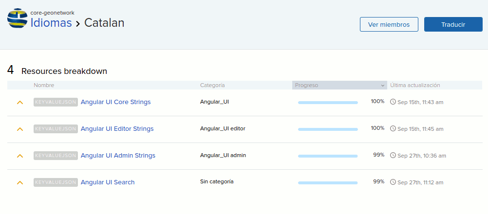

GeoNetwork
Personalización avanzada
Nosotros
 |
Óscar Fonts | |
 |
María Arias de Reyna |  |
 |
Víctor González |
Servidores de test
Docker oscarfonts/geonetwork
GeoCat Demo Server
Despliegue
$GN_BASE /var/lib/tomcat7/webapps/geonetwork/
$GN_DATA_DIR /var/local/geonetwork_data/
PostGIS
GN_BASE => WEB-INF/config-node/srv.xml
GN_BASE => WEB-INF/config-db/jdbc.properties
jdbc.host=127.0.0.1
jdbc.port=5432
jdbc.database=gn_db
jdbc.username=gn_user
jdbc.password=gn_pass
GN_BASE => WEB-INF/config-db/postgres.xml
...
...
...
Multiidioma
Transifex
 https://www.transifex.com/geonetwork/core-geonetwork/Multiidioma
Schema Plugins (XML)
GN_DATA_DIR => config/schema_plugins/[iso19139]/loc/[spa]/*.xml
strings.xml
labels.xml
Metadatos
Entidad raíz que define los metadatos de un recurso o recursos
codelists.xml
documentDigital
...
imageDigital
...
...
Multiidioma
Los metadatos
1. El idioma principal
2. Definir idiomas secundarios
...
3. Textos multilingües
Texto en el idioma principal
Text in secondary language
...